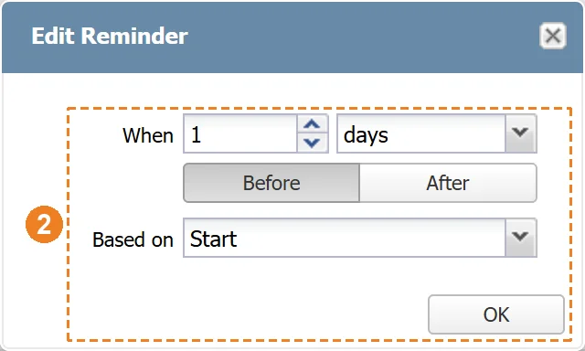
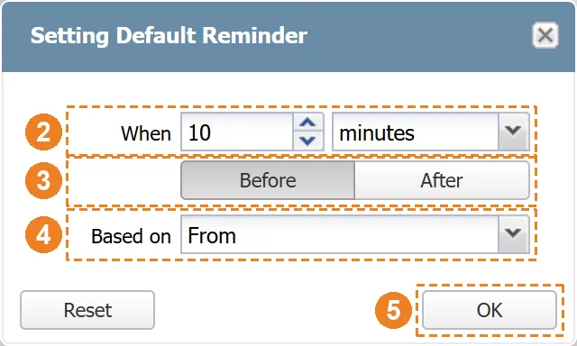
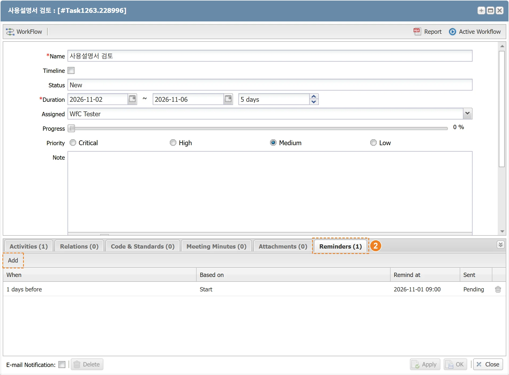
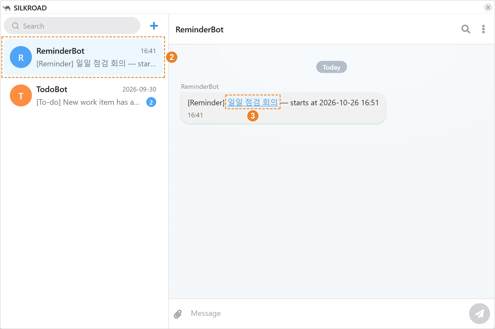
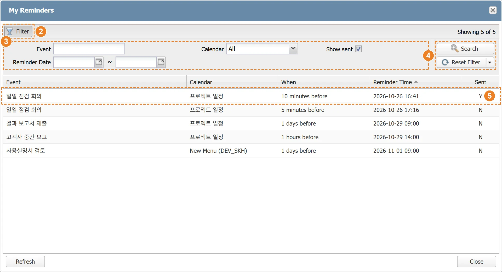

|
SILKROAD Reminder는 일정의 시작 또는 종료 시각을 기준으로 지정한 시간 전·후에 대상 사용자에게 메신저로 알림을 발송하는 기능을 제공한다. 알림은 Calendar 일정과 프로젝트 Task 아이템에 등록할 수 있으며, Calendar 일정의 알림은 일정 참석자(Attendees)에게, Task 아이템의 알림은 Task 담당자(Assigned)에게 발송된다. 사용자는 본인에게 등록된 알림을 My Reminders에서 한 번에 조회할 수 있다.
알림은 Calendar의 일정 편집 창(Edit Event)과 Task 아이템 상세 창 하단의 Reminders 탭에서 등록하고 관리한다. Reminders 탭 제목에는 등록된 알림 수가 표시된다.
|
구분 | 명칭 | 설명 |
| Add | 알림 추가 창(Add Reminder) 실행 |
| When | 알림 조건. 시간 값, 단위와 이전/이후(before/after)로 표시 |
| Based on | 알림 기준 시각. Calendar 일정은 From/To, Task 아이템은 Start/End |
| Remind at | 계산된 알림 발송 일시 |
| Sent | 발송 상태. Pending(발송 대기), Sent(발송 완료) |
| 삭제 | 알림 삭제. 발송 완료된 알림은 삭제·수정할 수 없음 |
알림 시각은 Add Reminder 창의 다음 세 가지 항목으로 지정한다.
- When : 알림 시간 값과 단위(minutes, hours, days, weeks)
- Before / After : 기준 시각의 이전 또는 이후
- Based on : 기준 시각. Calendar 일정은 From(시작)/To(종료), Task 아이템은 Start(시작일)/End(종료일)
알림 발송 일시(Remind at)는 기준 시각(Based on)에서 When에 지정한 시간만큼 이전(Before) 또는 이후(After)로 계산한다.
- 예) 10 minutes, Before, From : 일정 시작 10분 전에 발송
- 예) 5 minutes, Before, To : 일정 종료 5분 전에 발송
- 예) 1 days, Before, Start : Task 시작일 하루 전 오전 9시에 발송
하루 종일(All Day) 일정과 Task 아이템은 기준 날짜의 시스템 설정 시각(기본 오전 9시)을 기준 시각으로 사용한다. 종료 기준(To/End)인 경우 종료일 당일이 기준 날짜가 된다.
계산된 알림 시각이 이미 지난 경우 ‘The selected time (…) has already passed. You can only add reminders for a future time.’ 안내 메시지가 표시되고 알림이 추가되지 않는다. 같은 설정(When, Before/After, Based on)의 발송 대기 알림이 이미 있으면 ‘A pending reminder with the same setting already exists.’ 안내 메시지가 표시되고 알림이 추가되지 않는다. When 항목을 비워 두고 OK 버튼을 클릭하면 When 항목이 빨간색 테두리로 표시되고 알림이 추가되지 않는다. |
Calendar 일정에 알림을 등록한다. 알림은 일정 참석자(Attendees)에게 발송되며, 일정 편집 창에서 추가·수정·삭제한 알림은 일정을 저장(Save)할 때 반영된다.
① Calendar View에서 알림을 설정할 일정을 클릭해 ‘Edit Event’ 창을 연다. 새 일정은 ‘Add Event’ 창에서 등록한다.
② ‘Reminders’ 탭의 ‘Add’ 버튼을 클릭한다.
③ ‘Add Reminder’ 창의 When 항목에 알림 시간 값을 입력하고 단위를 선택한다.
④ ‘Before’ 또는 ‘After’ 버튼으로 알림 기준을 선택한다.
⑤ Based on 항목에서 기준 시각(From/To)을 선택한다.
⑥ ‘OK’ 버튼을 클릭한다.
⑦ ‘Save’ 버튼을 클릭해 일정을 저장한다.
- Reminders 목록에 알림 발송 일시(Remind at)와 발송 상태(Pending)가 표시된다.
|
알림은 참석자에게만 발송된다. 참석자가 없는 일정에 알림을 설정하고 저장하면 알림이 등록되지 않는다는 안내 메시지가 표시된다. 일정의 참석자마다 알림이 각각 생성되며, 참석자는 My Reminders에서 본인 알림을 확인할 수 있다. |
① ‘Edit Event’ 창의 Reminders 목록에서 수정할 알림을 더블클릭한다.
② ‘Edit Reminder’ 창에서 When, Before/After, Based on을 변경하고 ‘OK’ 버튼을 클릭한다.
③ ‘Save’ 버튼을 클릭해 일정을 저장한다.
 |
발송 완료(Sent)된 알림은 수정할 수 없으며, 더블클릭하면 ‘Sent reminders cannot be edited.’ 안내 메시지가 표시된다. |
① ‘Edit Event’ 창의 Reminders 목록에서 삭제할 알림 행의 삭제 아이콘을 클릭한다.
② ‘Save’ 버튼을 클릭해 일정을 저장한다.
발송 완료(Sent)된 알림은 삭제 아이콘이 비활성화되어 삭제할 수 없다. |
캘린더별 기본 알림을 설정한다. 기본 알림이 설정된 캘린더에 새 일정을 등록하면 Reminders 탭에 기본 알림이 자동으로 추가된다.
① Calendar List에서 캘린더를 우클릭해 ‘Set Default Reminder’를 클릭한다.
② ‘Setting Default Reminder’ 창의 When 항목에 알림 시간 값을 입력하고 단위를 선택한다.
③ ‘Before’ 또는 ‘After’ 버튼으로 알림 기준을 선택한다.
④ Based on 항목에서 기준 시각(From/To)을 선택한다.
⑤ ‘OK’ 버튼을 클릭한다.
 |
설정된 기본 알림을 해제하려면 ‘Setting Default Reminder’ 창에서 ‘Reset’ 버튼을 클릭한다. Set Default Reminder 메뉴는 사용자가 직접 생성한 캘린더에서만 표시된다. |
Task 메뉴가 Calendar에 연결된 경우(Calendar 사용설명서의 ‘프로젝트 Task 캘린더 연결’ 참조), Task 아이템 상세 창 하단에 Reminders 탭이 표시된다. Task 아이템의 알림은 Task 담당자(Assigned)에게 발송되며, Based on은 Start(시작일) 또는 End(종료일)를 사용한다. Task 아이템의 알림은 추가·수정·삭제 즉시 저장되므로 별도로 저장할 필요가 없다.
Task 아이템의 알림은 캘린더에 표시되는 아이템에만 등록할 수 있다. Task 목록의 Calendar 컬럼에서 캘린더에 표시할 아이템을 체크한다. Calendar 컬럼은 Calendar의 ‘Select Calendar Items’ 설정과 같은 값을 사용한다.
① 프로젝트의 Task 메뉴를 연다.
② Task 목록의 Calendar 컬럼에서 캘린더에 표시할 아이템의 체크박스를 체크한다.
- Calendar 컬럼 머리글의 체크박스로 전체 아이템을 한 번에 체크하거나 해제할 수 있다.
|
Calendar 컬럼은 Task 메뉴가 Calendar에 연결된 경우에만 표시되며, 메뉴 쓰기 권한이 있는 사용자만 변경할 수 있다. |
① Task 목록에서 알림을 설정할 Task 아이템을 더블클릭해 상세 창을 연다.
② 하단 ‘Reminders’ 탭의 ‘Add’ 버튼을 클릭한다.
③ ‘Add Reminder’ 창의 When 항목에 알림 시간 값을 입력하고 단위를 선택한다.
④ ‘Before’ 또는 ‘After’ 버튼으로 알림 기준을 선택한다.
⑤ Based on 항목에서 기준 날짜(Start/End)를 선택한다.
⑥ ‘OK’ 버튼을 클릭한다.
- 알림이 즉시 저장되고 Reminders 목록에 알림 발송 일시(Remind at)와 발송 상태(Pending)가 표시된다.
 |
담당자가 없는 Task 아이템에는 알림을 추가할 수 없으며 ‘This task has no assignee. Reminders are sent to the task's assignees, so please assign someone and save first.’ 안내 메시지가 표시된다. Reminders 탭은 저장된 Task 아이템에서만 표시된다. 새로 만든 Task 아이템은 먼저 저장한 뒤 알림을 등록한다. 알림 수정(더블클릭)과 삭제(삭제 아이콘) 방법은 Calendar 일정 알림과 같다. |
Task 아이템의 기간(시작일, 종료일)을 변경하면 등록된 알림의 발송 일시(Remind at)가 변경된 기간을 기준으로 자동으로 다시 계산된다. 다시 계산한 발송 일시가 이미 지난 경우 ‘A reminder is set for a time that has already passed, so it will fire almost immediately.’ 안내 메시지가 표시되고, 해당 알림은 곧바로 발송된다.
SILKROAD 서버는 1분 간격으로 발송 시각이 된 알림을 확인해 대상 사용자에게 메신저(Messenger) 1:1 대화로 알림을 발송한다. 알림은 ‘ReminderBot’ 계정 이름으로 발송되며, 발송된 알림의 상태는 Sent로 바뀐다.
- 메시지 형식 : [Reminder] 일정명 — starts at 시작 일시 (종료 기준이면 ends at 종료 일시)
- 하루 종일 일정과 Task 아이템은 날짜 뒤에 (all day)가 표시된다.
① SILKROAD 메인 화면 상단의 메신저 버튼을 클릭한다.
② 대화 목록에서 ‘ReminderBot’ 대화를 클릭해 알림 메시지를 확인한다.
③ 메시지의 일정명(링크)을 클릭하면 해당 일정의 정보 창(Event Info)이 열린다. Task 아이템 알림은 Task 아이템 상세 창이 열린다.
 |
|
알림 시각이 되지 않았거나 이미 발송된 알림은 발송되지 않는다. |
사용자에게 등록된 Calendar 일정 알림과 Task 아이템 알림을 한 화면에서 조회한다. 목록에는 일정명(Event), 캘린더(Calendar), 알림 조건(When), 알림 일시(Reminder Time), 발송 여부(Sent)가 표시되며, 기본적으로 발송 대기 알림만 표시된다.
① Calendar 화면의 ‘My Reminders’ 버튼을 클릭한다.
② 조건을 지정해 조회하려면 ‘Filter’ 버튼을 클릭해 필터 영역을 연다.
③ Event(일정명), Calendar, Reminder Date(알림 일자 기간)를 입력하고, 발송된 알림까지 보려면 ‘Show sent’를 체크한다.
④ ‘Search’ 버튼을 클릭한다. 조건을 초기화하려면 ‘Reset Filter’ 버튼을 클릭한다.
⑤ 목록의 알림을 더블클릭하면 Calendar 일정은 정보 창(Event Info)이, Task 아이템은 상세 창이 열린다.
 |
목록 오른쪽 위에 조건에 맞는 알림 수(Showing N of M)가 표시된다. |
번호 | 메시지 | 설명 | 해결방안 |
|---|---|---|---|
1 | A pending reminder with the same setting already exists. | 같은 설정(When, Based on)의 발송 대기 알림이 이미 등록되어 있는 경우 | 등록된 알림 확인 다른 시각으로 알림 설정 |
2 | The selected time (YYYY-MM-DD HH:mm) has already passed. You can only add reminders for a future time. | 계산된 알림 시각(Remind at)이 현재 시각보다 이전인 경우 (알림 수정 시에는 ‘add’ 대신 ‘set’으로 표시) (종일 일정과 Task 아이템은 기준일 9시 기준으로 계산) | 알림 시각이 현재 이후가 되도록 When 또는 Based on 변경 |
3 | Sent reminders cannot be edited. | 이미 발송된(Sent) 알림을 수정하려는 경우 | 새 알림을 추가 |
4 | This task has no assignee. Reminders are sent to the task's assignees, so please assign someone and save first. | 담당자가 지정되지 않은 Task 아이템에 알림을 추가하려는 경우 | Assigned 항목에 담당자를 지정하고 저장한 후 알림 추가 |
5 | The assignee change has not been saved yet. Reminders are created from saved assignees — please save the task first, then add the reminder. | Task 아이템의 담당자를 변경한 뒤 저장하지 않은 상태에서 알림을 추가하려는 경우 | Task 아이템을 저장한 후 알림 추가 |
6 | N reminder(s) have already passed their reminder time and will not be registered. Do you want to continue saving? | 일정을 저장할 때 알림 시각이 이미 지난 발송 대기 알림이 있는 경우(확인 창) | ‘Yes’: 지난 알림을 제외하고 저장 ‘No’: 일정 일시 또는 알림 수정 후 저장 |
7 | Reminders are sent only to attendees. This event has no attendees, so the reminder(s) will not be registered. Do you want to continue saving? | 참석자(Attendees) 없이 알림이 있는 일정을 저장하는 경우(확인 창) | ‘No’ 클릭 후 참석자 추가 ‘Yes’: 알림 없이 일정만 저장 |
8 | A reminder is set for a time that has already passed, so it will fire almost immediately. | Task 아이템의 기간 변경으로 발송 전 알림의 시각이 이미 지난 시각으로 다시 계산된 경우 (여러 건이면 ‘N reminders are …’로 표시) | 곧바로 발송되므로 필요 없는 알림은 삭제 |
9 | Failed to save the default reminder. | Setting Default Reminder 창에서 기본 알림 저장에 실패한 경우 (해제 실패 시 ‘Failed to reset the default reminder.’) | 다시 시도 관리자에게 문의 |
10 | Failed to save the reminder. | Task 아이템 알림 저장에 실패한 경우 (통신 오류 시 ‘An error occurred while saving the reminder.’) | Reminders 탭의 알림 목록 확인 후 다시 시도 관리자에게 문의 |